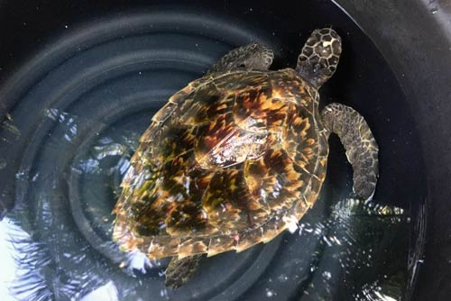
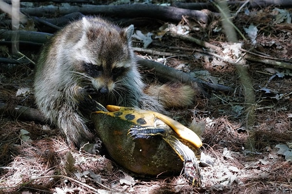

threats to turtles

Poaching
Once a female turtle reaches the shore to lay its eggs, that is the final time that they see those eggs, before returning back to the ocean. They do not get to witness their young hatchlings grow. Sea turtles continue to be harvested either to be traded illegally or for human consumption. “At unprotected beaches, poachers destroy more than 90% of sea turtle nests to sell the eggs into the illegal wildlife trade.” Sea turtles continue to be brutally harvested either to be traded illegally or for human consumption. And if this keeps on happening, we will end up losing the valuable existence of turtle species. However, in order to prevent this from happening, under section 30 of the Fauna and Flora Ordinance (as amended), it is now illegal to kill, wound, harm or take a turtle. Unlawful possession of a turtle is also prohibited, including selling them, destroy or steal their eggs. Further, the hatcheries that operate in Sri Lanka try to prevent the above from occurring by purchasing the eggs that are being sold by locals and fishermen.
Consequence:
Sea turtles are often killed for their meat, eggs and shells, This illegal trade of sea turtles can drive sea turtle populations to dangerously low levels.
Solution:
Governments can enforce laws and regulations to prohibit poaching and the sale of sea turtle products. People can also help by reporting any illegal activity they witness and supporting organizations that work to protect sea turtles.

Habitat loss
Beaches play a vital role for the sea turtles when it comes to nesting. However, over the years due to the rapid increase in coastal development surrounding the beach, beach erosion and vehicle trafficking or any other activities that happen because of human beings, most of the nesting beaches have either been destroyed or disrupted. Turtles become disoriented when they see artificial lights and this leads to nesting females from not approaching the beach to lay their eggs. And buildings and vehicles surrounding the beach always results in a lot of light being present which makes it difficult for them to dig the nests. In addition, turtles feed on coral reefs and seagrass and as a result of activities happening on the shore, such as sedimentation from clearing of land, their source of food either becomes damaged or destroyed.
Consequence:
Sea turtles need sandy beaches to lay their eggs, and their habitat is being destroyes by human activities such as coastal development, erosion and sand mining. This loss of habitat can lead to a decline in sea turtle populations.
Solution:
People can help protect sea turtle habitats by supporting conservation efforts, reducing their use of plastcis and other harmful materials that end up in the ocean and advocating for politics that protect coastal ecosystems.

Natural predation on eggs and hatchlings
Some predators that prey on eggs and hatchlings include, boars, racoons, dogs etc. During the emerging stages of a hatchling, an egg scent comes from their body with the smell of wet sand. And this smell is what the above predators end up tracking and digging up the nest of turtle eggs. Once the egg hatches, the hatchling will have to reach the water then it is at risk of being caught by birds such as gulls. During this period, very few hatchlings make it to adulthood. Adult turtles underwater end up becoming a target of other sea creatures such as sharks and orcas.
Consequence:
Many animals, such as birds, crabs and racoons, prey on sea turtle eggs and hatchlings, which further reduce the population of sea turtles.
Solution:
One solution is to protect sea turtle nests by placing them in cages or fencing off the nesting area. Also by reducing the amount of artificial light on beaches, baby sea turtles will have a better chance of finding their way to the ocean as they depend on the reflection of the moon and stars on the water to guide them.
 KOSGODA
BENTOTA
SOLUTION
KOSGODA
BENTOTA
SOLUTION